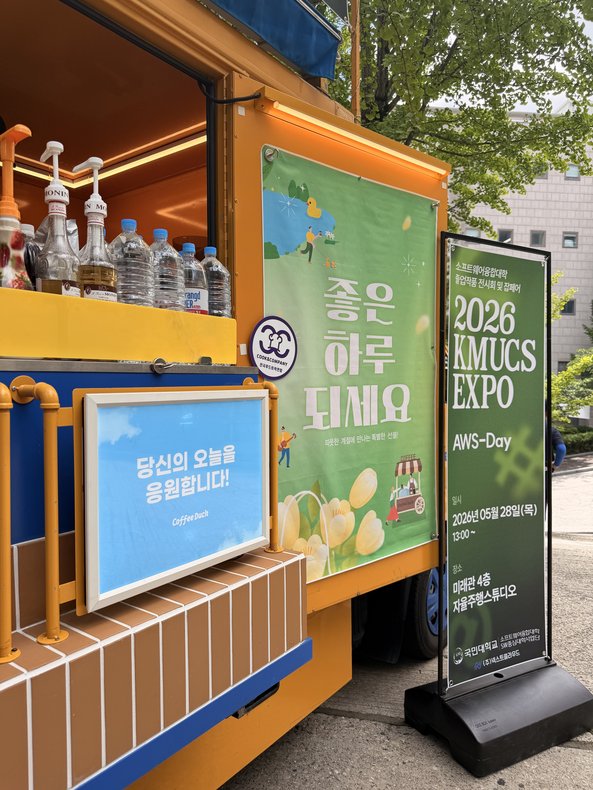
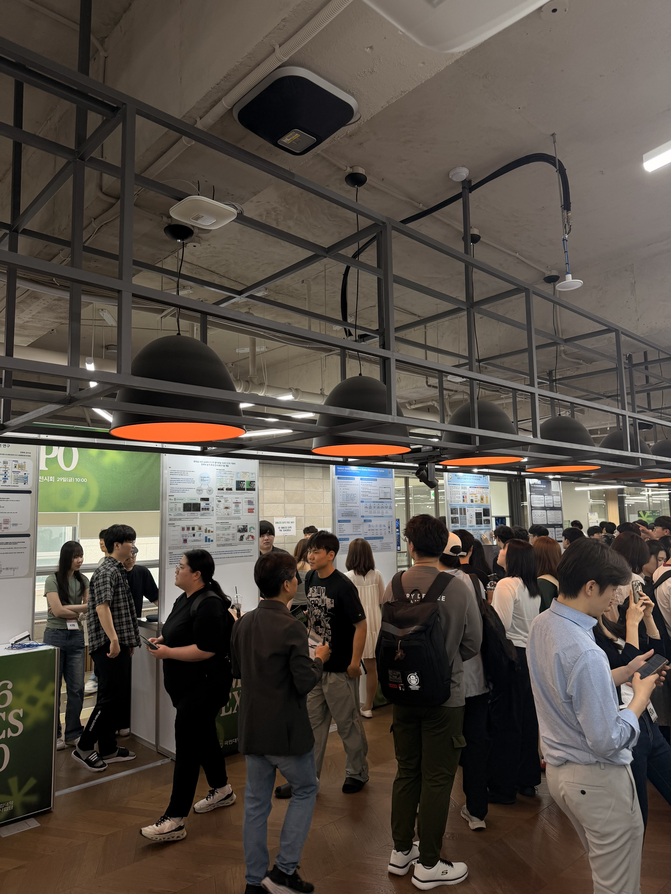

KMUCS EXPO 2026 — AWS-Day 전시 참관 리포트

1. 전시 개요
이번 AWS-Day 전시는 국민대학교 소프트웨어융합대학 캡스톤 디자인 졸업작품 전시의 일환으로, 51번부터 61번, 81번부터 85번 팀이 참여한 섹션이었다. 전체 전시 중에서도 이 구역은 AWS 클라우드 인프라를 기반으로 서비스를 구현한 팀들이 중심이 되었으며, 그에 맞게 실제 배포와 운영까지 고려한 완성도 높은 작품들이 눈에 띄었다.

2. 인상 깊었던 작품들
이번 섹션에서 가장 먼저 발걸음을 멈추게 만든 건 58팀의 CRiT였다. 유튜브 크리에이터를 위한 AI 기반 채널 분석 및 콘텐츠 기획 플랫폼인데, 단순히 조회수나 구독자 추이를 보여주는 수준이 아니라 콘텐츠의 기획 단계부터 AI가 방향을 제안해준다는 개념이 흥미로웠다. 요즘 1인 미디어 시장이 포화 상태라는 말이 많은데, 그 안에서 데이터를 기반으로 차별화된 방향을 찾는 데 실질적인 도움을 줄 수 있겠다는 생각이 들었다. TypeScript 기반으로 프론트엔드가 깔끔하게 구현되어 있었고, 실제 크리에이터들이 쓸 법한 UX를 고민한 흔적이 느껴졌다.
52팀의 이음은 조금 다른 결의 프로젝트였다. "나의 이해를 읽고, 배움의 흐름을 잇다"라는 슬로건처럼, 단순히 콘텐츠를 소비하는 학습이 아니라 학습자가 얼마나 이해했는지를 파악하고 그에 맞는 다음 흐름을 연결해주는 서비스다. 이 팀이 공략하려는 문제, 즉 학습자의 이해도를 실시간으로 파악한다는 게 기술적으로도 쉽지 않은 과제인데, Python 기반으로 실제로 구현해낸 점이 인상적이었다. star 수도 다른 팀들에 비해 상당히 높았는데, 그만큼 아이디어에 공감한 사람이 많았다는 방증이 아닐까 싶었다.
55팀의 Pawsitive는 반려견 AI 건강 분석부터 산책 매칭까지 아우르는 서비스였다. 반려동물 인구가 1,500만을 넘어선 시대에 이 시장을 타깃으로 잡은 팀의 시장 감각이 좋았다. 건강 분석이라는 부분이 얼마나 정확하게 작동하는지는 부스에서 직접 확인하기가 어려웠지만, 산책 매칭이라는 소셜 기능과 건강 케어를 하나의 앱에서 연결하려는 시도 자체가 흥미로웠다.
53팀의 오늘어디는 매일 함께하는 경로 알림 서비스로, 처음에는 단순한 위치 공유 앱인가 싶었는데 들여다보니 가족이나 가까운 사람들 사이의 안심 확인에 초점을 맞춘 서비스였다. 앞서 본 다른 팀의 치매 환자 길 안내 서비스와 방향은 다르지만, 결국 '사람들이 서로 걱정하지 않아도 되는 일상'을 만들고 싶다는 문제의식이 비슷하다는 생각이 들어 흥미로운 비교가 됐다.
60팀의 인터톡은 면접 데이터와 개인 이력이 만나는 플랫폼이라는 소개가 취업을 앞둔 입장에서 가장 직접적으로 와닿았다. 면접 준비를 할 때 막막한 게, 내 이력에 맞는 예상 질문이나 피드백을 받을 방법이 마땅치 않다는 것인데, 이 팀이 바로 그 지점을 건드리고 있었다. 실제로 써보고 싶다는 생각이 제일 강하게 든 작품이었다.
3. 전체적인 소감
AWS-Day 섹션을 돌아보면서 느낀 건, 이 구역 팀들의 공통점이 단순히 기술을 구현하는 데 그치지 않고 실제 서비스로서의 완결성을 고민했다는 점이었다. 클라우드 인프라를 기반으로 한다는 특성상 배포와 운영, 확장성까지 염두에 두어야 했을 텐데, 그런 현실적인 고민의 흔적이 작품 곳곳에서 느껴졌다.
또 한 가지 인상적인 점은 주제의 다양성이었다. 같은 AI 기술을 써도 어떤 팀은 크리에이터 이코노미를, 어떤 팀은 반려동물 시장을, 어떤 팀은 교육을 타깃으로 잡았다. 결국 기술보다 어떤 문제를 풀 것인가를 먼저 정했고, 거기에 맞는 기술 스택을 골랐다는 순서가 느껴졌다. 이번 전시를 통해 졸업 전에 풀고 싶은 문제가 무엇인지를 더 구체적으로 고민해봐야겠다는 생각을 갖고 돌아왔다.